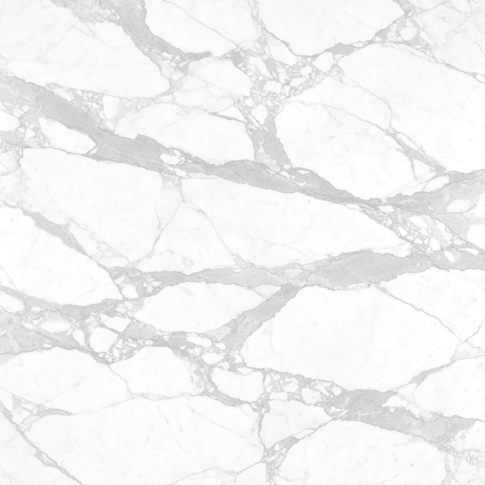
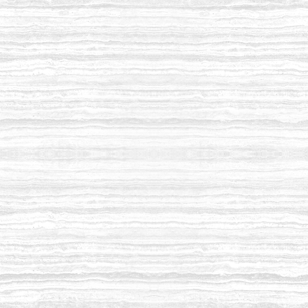

Gallery · 场地与细节
五张同权图，图注压在图里

主视觉 · 大脉络 汉白玉 · 台面
汉白玉 · 台面石面 · 颗粒
 拷贝纸 · 纤维
拷贝纸 · 纤维
石灰华 · 层理图注条贴在格底、色取 accent 88%，⛔ 不压主体；图注只写 4–6 字，说明另起一行到 figcaption
Gallery · 并列同权
五张图同权，就不该分大小
圆切只给「并列同权」的场地 / 人物 / 产品；⛔ 需要看四角细节的图别圆切，切掉的正是信息
Cards · 六个角色
左文右图，图出血到卡边
梁架版式
17 族 39 式，装得下才交付。
瓦作表面
九件主题，配色一次过闸。
落雪素材
用户投进来的原料，不进库。
B 出口网页
单文件 HTML，键盘翻页。
C 出口PPTX
原生文本与形状，可编辑。
闸判据
红即拒，假绿不算过。
卡内只留左内边距，图占 42% 宽且贴右缘；名字用 pill，别用头像占位